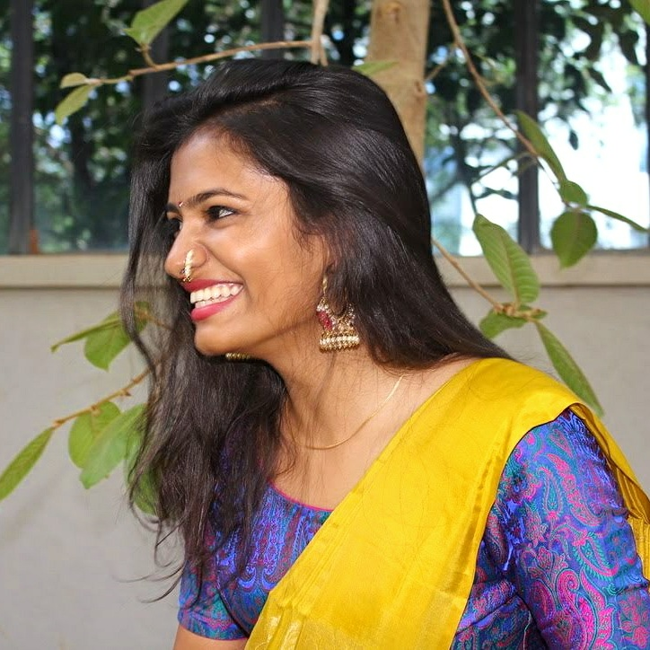

About

Machine Learning Engineer with experience building production ML systems, research pipelines, and data infrastructure across healthcare, logistics, and ML security. Currently at HiddenLayer, where I work on scalable data lakes, multi-modal model evaluation, and end-to-end training pipelines. Previously a Computational Research Engineer at UC San Diego and Data Science Intern at Flock Freight. MS in Computer Science from UCSD; published research on hybrid CNN-LSTM networks for heart sound classification. Outside of work — travel, art, dance, and the belief that life is either a daring adventure or nothing at all.
Education
Master of Science in Computer Science and Engineering
March 2023
University of California, San Diego · San Diego, CA
GPA: 3.88 / 4.00
Roles & responsibilities:
- JUMP Mentor — Jacobs Undergraduate Mentoring Program, Jacobs School of Engineering
- MicroMBA Volunteer — Rady School of Management, UC San Diego
Bachelor of Engineering in Computer Science and Engineering
July 2020
BMS Institute of Technology & Management · Bengaluru, India
GPA: 8.94 / 10 · Scholarship for Academic Excellence
Roles & responsibilities:
- Secretary for Semaphore (techno-cultural fest)
- TEDxBMSITM — Head of Events & Curation Team Member
- Dept Student Head for Tech Transform (tech fest)
- Core team member of Free Software Club, BMSIT
Experience
Machine Learning Engineer
Jan 2024 – Present
HiddenLayer · Remote, USA
Python, TensorFlow, PyTorch, Terraform, AWS, Metaflow
- Built and maintained a scalable Databricks data lake using medallion architecture
- Led development of a multi-modal test model suite and built an automated FP/FN reporting pipeline for ML product evaluation
- Integrated OpenAI and Hugging Face APIs for language detection, translation, and annotation
- Built end-to-end training and validation pipelines for model promotion
Computational Research Engineer
Sept 2022 – Jan 2024
University of California San Diego · San Diego, USA
Computational Neuroscience and Machine Learning Lab — Dr. Maxim Bazhenov
Python, TensorFlow, PyTorch
- Developed a seq2seq network for sleep staging using EEG and respiration data
- Experimented with feature extraction for sleep quadrant prediction and sleep interruptions
Data Science Intern
June 2022 – Sept 2022
Flock Freight · San Diego, USA
GCP, Python, SQL, Scikit-learn, Docker, KServe, Mode
- Redesigned the ML application stack from a monolith to a microservice-based architecture
- Developed a recommender system ensemble of latent factor models, improving AUROC by 19%
- Optimized a production ML model, improving efficiency by 30%
- Refactored SQL queries, saving 60 hours of work per month
- Authored automated CI/CD workflows and fixed package dependency vulnerabilities in production
Associate ML Engineer
Oct 2020 – July 2021
AI Health Highway · Bengaluru, India
SPIRE Lab, Indian Institute of Science — Dr. Prasanta Ghosh
AWS, Python, TensorFlow, Flask, Librosa
- Developed two hybrid CNN-LSTM networks for heart sound classification
- Deployed models using Flask API on AWS EC2 instances
- Coordinated data collection and annotation with medical professionals
- Implemented audio quality assessment tests and maintained visualization APIs
Deep Learning Research Intern
Feb 2020 – Sept 2020
Indian Institute of Science · Bengaluru, India
- Built an end-to-end pipeline for a diagnostic Wireless Capsule Endoscopy tool
- Implemented hierarchical classification with 8 models averaging 93.11% accuracy
- Worked on augmentation techniques to overcome shortage of annotated data
Earlier experience (2018–2019)
Deep Learning Research Intern
May 2019 – July 2019
Indian Institute of Science · Bengaluru, India
- Worked on detection and classification of WCE images, boosting AUROC by 17.41% over SOTA
- Experimented with a novel hierarchical binary classification tree to classify abnormalities stage-wise
Machine Learning Intern
Sept 2018 – Feb 2019
Vijna Labs Pvt Ltd · Bengaluru, India
- Worked on real-time image processing projects including segmentation, imgaug, and object recognition
Investment Analyst Intern
July 2018 – Feb 2019
Venture Catalysts · Bengaluru, India
- Worked on startup analysis, sector research, and handled startup investments and events
Publications
Unsegmented Heart Sound Classification Using Hybrid CNN-LSTM Neural Networks
43rd Annual International Conference of the IEEE Engineering in Medicine & Biology Society (EMBC), 2021
Noise Robust Detection of Fundamental Heart Sound using Parametric Mixture Gaussian and Dynamic Programming
43rd Annual International Conference of the IEEE Engineering in Medicine & Biology Society (EMBC), 2021
Projects
Neural Conditional Random Fields for Named Entity Recognition
2022
Python, NLP
- Built a Neural CRF BiLSTM model for NER
- Implemented the forward algorithm for learning and the Viterbi algorithm for decoding
Visual-Inertial SLAM
2022
Python, NumPy, ROS
- Implemented SLAM using an extended Kalman filter with IMU and stereo camera measurements
- Built for an MBot Mega robot with Qualcomm RB5
Skills
Languages
Python, SQL, Go, Java, C, C++, HTML, JavaScript
ML Stack
Deep Learning, NLP, PyTorch, TensorFlow, NumPy, Pandas, Matplotlib, Keras
Technologies & Tools
AWS, GCP, Docker, Git, Tableau, PySpark, Hadoop, Snowflake, KServe, ArgoCD, CircleCI, Mode, Jira, Terraform, Metaflow, Databricks